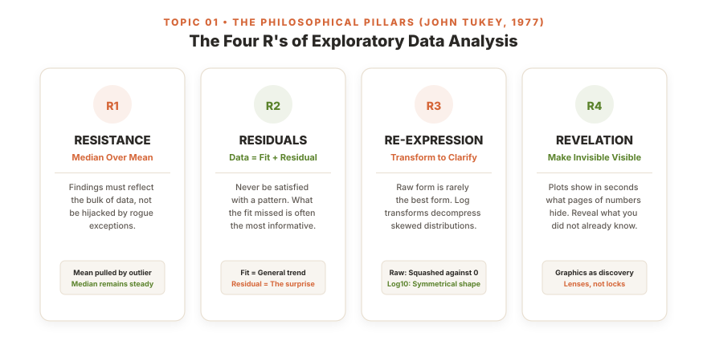
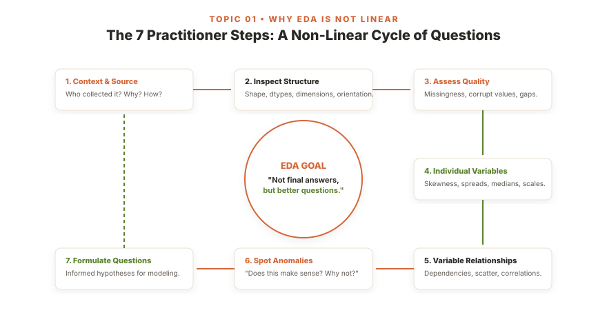

<!DOCTYPE html>
<html lang="en">
<head>
  <meta charset="UTF-8">
  <meta name="viewport" content="width=device-width, initial-scale=1.0">
  <title>The Philosophy of Looking: How Topic 01 Cured My Dataset-Hopping Panic | DS311 Blog</title>
  
  <!-- Meta & OpenGraph Tags -->
  <meta name="description" content="A friendly, narrative-driven reflection on Topic 01 (Introduction to Exploratory Data Analysis). Why rushing into confirmatory models and naive imputations wasted hours, and how John Tukey and Francis Anscombe changed everything.">
  <meta name="author" content="Rogelio Mandamian">
  <meta property="og:title" content="The Philosophy of Looking: How Topic 01 Cured My Dataset-Hopping Panic">
  <meta property="og:description" content="Inspired by Minimalist Baker's simple, approachable philosophy: A candid journey through DATAVIS roadblocks, missing value paralysis, and the breakthrough of Tukey's Four R's and Anscombe's Quartet.">
  <meta property="og:type" content="article">

  <!-- Google Fonts: Fraunces (Editorial Display Serif), Plus Jakarta Sans (Clean Modern Sans), JetBrains Mono -->
  <link rel="preconnect" href="https://fonts.googleapis.com">
  <link rel="preconnect" href="https://fonts.gstatic.com" crossorigin>
  <link href="https://fonts.googleapis.com/css2?family=Fraunces:ital,opsz,wght@0,9..144,400;0,9..144,600;0,9..144,700;0,9..144,800;1,9..144,400&family=JetBrains+Mono:wght@400;500;600;700&family=Plus+Jakarta+Sans:ital,wght@0,300;0,400;0,500;0,600;0,700;1,400;1,500&display=swap" rel="stylesheet">

  <style>
    /* CSS RESET & MINIMALIST BAKER THEME DNA (PERMANENT WARM LIGHT MODE) */
    *, *::before, *::after {
      box-sizing: border-box;
      margin: 0;
      padding: 0;
    }

    html {
      scroll-behavior: smooth;
      text-rendering: optimizeLegibility;
      -webkit-font-smoothing: antialiased;
    }

    :root {
      /* Minimalist Baker Signature: Warm Linen Cream, Burnt Terracotta, Garden Olive, Espresso Charcoal */
      --bg-canvas: #FAF7F2;          /* Signature warm linen/flour ivory */
      --bg-surface: #FFFFFF;         /* Crisp clean white cards */
      --bg-surface-elevated: #F4EFEB;/* Soft wheat tint */
      --bg-surface-subtle: #F8F5F0;  /* Organic block tint */
      --border-subtle: #EBE5DC;      /* Light organic border */
      --border-prominent: #D8CEBE;   /* Defined warm border */
      
      --text-main: #2A2825;          /* Deep warm espresso charcoal */
      --text-muted: #5E5852;         /* Muted editorial brown-grey */
      --text-faint: #8E867D;         /* Faint caption tone */
      
      --accent-terracotta: #D56638;  /* Minimalist Baker signature rust/terracotta */
      --accent-terracotta-dark: #B44F25;
      --accent-terracotta-soft: rgba(213, 102, 56, 0.09);
      
      --accent-olive: #5A822B;       /* Fresh garden olive green */
      --accent-olive-soft: rgba(90, 130, 43, 0.1);
      
      --accent-honey: #D9822B;       /* Warm honey amber */

      --code-bg: #F0EAE1;
      --code-border: #DED6CA;

      --card-shadow: 0 4px 18px -2px rgba(42, 40, 37, 0.05), 0 2px 6px -1px rgba(42, 40, 37, 0.03);
      --card-shadow-hover: 0 10px 28px -3px rgba(42, 40, 37, 0.09), 0 4px 12px -2px rgba(42, 40, 37, 0.04);

      --font-serif: 'Fraunces', Georgia, serif;
      --font-sans: 'Plus Jakarta Sans', -apple-system, sans-serif;
      --font-mono: 'JetBrains Mono', monospace;

      --reading-width: 800px;
      --nav-height: 72px;
    }

    body {
      background-color: var(--bg-canvas);
      color: var(--text-main);
      font-family: var(--font-sans);
      font-size: 1.0625rem;
      line-height: 1.82;
      min-height: 100vh;
    }

    /* READING PROGRESS BAR */
    #progress-track {
      position: fixed;
      top: 0;
      left: 0;
      width: 100%;
      height: 3px;
      background: transparent;
      z-index: 1000;
    }

    #progress-bar {
      height: 100%;
      width: 0%;
      background: linear-gradient(90deg, var(--accent-terracotta), var(--accent-olive));
      transition: width 0.08s linear;
    }

    /* MINIMALIST BAKER SIGNATURE STICKY HEADER */
    .site-header {
      position: sticky;
      top: 0;
      z-index: 999;
      background: rgba(250, 247, 242, 0.96);
      backdrop-filter: blur(12px);
      -webkit-backdrop-filter: blur(12px);
      border-bottom: 1px solid var(--border-subtle);
      transition: all 0.25s ease;
    }

    .header-container {
      max-width: 1200px;
      margin: 0 auto;
      padding: 0.95rem 2rem;
      display: flex;
      justify-content: space-between;
      align-items: center;
      gap: 1.5rem;
    }

    .logo-block {
      display: flex;
      flex-direction: column;
      align-items: flex-start;
      text-decoration: none;
      color: var(--text-main);
      transition: opacity 0.2s ease;
    }

    .logo-block:hover {
      opacity: 0.85;
    }

    .brand-logo-text {
      font-family: var(--font-serif);
      font-size: 1.65rem;
      font-weight: 800;
      letter-spacing: -0.03em;
      color: var(--text-main);
      display: flex;
      align-items: baseline;
      gap: 0.35rem;
      line-height: 1.15;
    }

    .brand-logo-text span {
      color: var(--accent-terracotta);
      font-style: italic;
    }

    .brand-subtext {
      font-family: var(--font-sans);
      font-size: 0.68rem;
      font-weight: 700;
      text-transform: uppercase;
      letter-spacing: 0.15em;
      color: var(--text-faint);
      margin-top: 0.15rem;
    }

    .header-nav {
      display: flex;
      align-items: center;
      gap: 1.35rem;
    }

    .nav-link {
      font-family: var(--font-sans);
      font-size: 0.8rem;
      font-weight: 700;
      text-transform: uppercase;
      letter-spacing: 0.08em;
      text-decoration: none;
      color: var(--text-muted);
      transition: color 0.2s ease;
      position: relative;
      padding: 0.25rem 0;
      white-space: nowrap;
    }

    .nav-link:hover {
      color: var(--accent-terracotta);
    }

    .nav-link::after {
      content: '';
      position: absolute;
      bottom: -2px;
      left: 0;
      width: 0;
      height: 2px;
      background: var(--accent-terracotta);
      transition: width 0.2s ease;
    }

    .nav-link:hover::after {
      width: 100%;
    }

    /* EDITORIAL CONTAINER: SINGLE CENTERED COLUMN */
    .article-wrap {
      max-width: var(--reading-width);
      margin: 2.5rem auto 5rem;
      padding: 0 1.5rem;
    }

    .editorial-content {
      width: 100%;
    }

    /* BREADCRUMBS */
    .breadcrumbs {
      display: flex;
      align-items: center;
      gap: 0.5rem;
      font-family: var(--font-sans);
      font-size: 0.76rem;
      font-weight: 700;
      text-transform: uppercase;
      letter-spacing: 0.08em;
      color: var(--text-faint);
      margin-bottom: 1.25rem;
    }

    .breadcrumbs a {
      color: var(--accent-terracotta);
      text-decoration: none;
    }

    /* EDITORIAL HERO TITLE & DECK */
    .hero-heading {
      font-family: var(--font-serif);
      font-size: clamp(2.2rem, 1.8rem + 1.8vw, 3.25rem);
      font-weight: 800;
      line-height: 1.18;
      letter-spacing: -0.025em;
      color: var(--text-main);
      margin-bottom: 1.25rem;
    }

    .hero-deck {
      font-size: 1.2rem;
      color: var(--text-muted);
      line-height: 1.65;
      font-style: italic;
      margin-bottom: 1.75rem;
      font-family: var(--font-serif);
    }

    /* BYLINE STRIP (AUTHENTIC & ACCESSIBLE) */
    .byline-row {
      display: flex;
      align-items: center;
      justify-content: space-between;
      flex-wrap: wrap;
      gap: 1.25rem;
      padding: 1.15rem 0;
      border-top: 1px solid var(--border-subtle);
      border-bottom: 1px solid var(--border-subtle);
      margin-bottom: 2.5rem;
    }

    .byline-author-box {
      display: flex;
      align-items: center;
      gap: 1rem;
    }

    .author-avatar-img {
      width: 54px;
      height: 54px;
      border-radius: 50%;
      object-fit: cover;
      border: 2px solid var(--accent-terracotta);
      box-shadow: 0 3px 10px rgba(42, 40, 37, 0.08);
    }

    .byline-text-col {
      display: flex;
      flex-direction: column;
      gap: 0.15rem;
    }

    .byline-name {
      font-family: var(--font-sans);
      font-size: 0.98rem;
      font-weight: 800;
      color: var(--text-main);
      display: flex;
      align-items: center;
      gap: 0.5rem;
    }

    .byline-badge {
      font-size: 0.7rem;
      background: var(--accent-terracotta-soft);
      color: var(--accent-terracotta);
      padding: 0.15rem 0.55rem;
      border-radius: 4px;
      font-weight: 700;
      letter-spacing: 0.04em;
    }

    .byline-subtext {
      font-size: 0.82rem;
      color: var(--text-muted);
      font-weight: 500;
    }

    /* STORY SECTIONS */
    .story-section {
      margin-bottom: 3.75rem;
      scroll-margin-top: calc(var(--nav-height) + 1.5rem);
    }

    .story-section h2 {
      font-family: var(--font-serif);
      font-size: 1.85rem;
      font-weight: 800;
      line-height: 1.25;
      letter-spacing: -0.02em;
      color: var(--text-main);
      margin: 2.75rem 0 1.25rem;
      display: flex;
      align-items: baseline;
      gap: 0.75rem;
    }

    p {
      margin-bottom: 1.45rem;
      color: var(--text-main);
      line-height: 1.82;
    }

    p.lead {
      font-size: 1.15rem;
      line-height: 1.75;
      color: var(--text-muted);
    }

    /* FRIENDLY BAKER CALLOUT BOXES */
    .baker-callout {
      background: var(--bg-surface-elevated);
      border: 1px solid var(--border-subtle);
      border-left: 4px solid var(--accent-terracotta);
      border-radius: 10px;
      padding: 1.4rem 1.6rem;
      margin: 2.25rem 0;
      box-shadow: var(--card-shadow);
    }

    .baker-callout-title {
      font-family: var(--font-serif);
      font-size: 1.08rem;
      font-weight: 700;
      color: var(--accent-terracotta);
      margin-bottom: 0.4rem;
      letter-spacing: -0.01em;
    }

    .baker-callout p:last-child {
      margin-bottom: 0;
    }

    /* STEP CARDS */
    .step-card {
      background: var(--bg-surface);
      border: 1px solid var(--border-subtle);
      border-radius: 12px;
      padding: 1.75rem;
      margin: 1.75rem 0;
      box-shadow: var(--card-shadow);
      display: flex;
      gap: 1.25rem;
      align-items: flex-start;
      transition: all 0.2s ease;
    }

    .step-card:hover {
      box-shadow: var(--card-shadow-hover);
      border-color: var(--border-prominent);
    }

    .step-number {
      width: 42px;
      height: 42px;
      border-radius: 50%;
      background: var(--accent-terracotta-soft);
      border: 2px solid var(--accent-terracotta);
      color: var(--accent-terracotta);
      font-family: var(--font-sans);
      font-weight: 800;
      font-size: 1.1rem;
      display: flex;
      align-items: center;
      justify-content: center;
      flex-shrink: 0;
    }

    .step-content {
      display: flex;
      flex-direction: column;
      gap: 0.35rem;
    }

    .step-title {
      font-family: var(--font-serif);
      font-size: 1.2rem;
      font-weight: 700;
      color: var(--text-main);
    }

    .step-desc {
      font-size: 0.95rem;
      color: var(--text-muted);
      line-height: 1.68;
    }

    /* FOUR R'S GRID */
    .four-rs-grid {
      display: grid;
      grid-template-columns: repeat(2, 1fr);
      gap: 1.5rem;
      margin: 2rem 0;
    }

    @media (max-width: 680px) {
      .four-rs-grid {
        grid-template-columns: 1fr;
      }
    }

    .r-card {
      background: var(--bg-surface);
      border: 1px solid var(--border-subtle);
      border-radius: 12px;
      padding: 1.75rem;
      box-shadow: var(--card-shadow);
      transition: all 0.2s ease;
      display: flex;
      flex-direction: column;
    }

    .r-card:hover {
      box-shadow: var(--card-shadow-hover);
      border-color: var(--border-prominent);
      transform: translateY(-2px);
    }

    .r-badge {
      display: inline-block;
      width: 38px;
      height: 38px;
      line-height: 38px;
      text-align: center;
      border-radius: 50%;
      font-weight: 800;
      font-size: 0.9rem;
      margin-bottom: 0.85rem;
    }

    .r-badge.terracotta {
      background: var(--accent-terracotta-soft);
      color: var(--accent-terracotta);
      border: 1.5px solid var(--accent-terracotta);
    }

    .r-badge.olive {
      background: var(--accent-olive-soft);
      color: var(--accent-olive);
      border: 1.5px solid var(--accent-olive);
    }

    .r-title {
      font-family: var(--font-serif);
      font-size: 1.28rem;
      font-weight: 800;
      color: var(--text-main);
      margin-bottom: 0.35rem;
    }

    .r-subtitle {
      font-family: var(--font-sans);
      font-size: 0.8rem;
      font-weight: 700;
      text-transform: uppercase;
      letter-spacing: 0.08em;
      margin-bottom: 0.75rem;
    }

    .r-desc {
      font-size: 0.92rem;
      color: var(--text-muted);
      line-height: 1.65;
      flex-grow: 1;
    }

    .r-core-idea {
      margin-top: 1rem;
      padding-top: 0.85rem;
      border-top: 1px solid var(--border-subtle);
      font-size: 0.85rem;
      font-style: italic;
      color: var(--text-main);
      font-weight: 600;
    }

    /* IMAGE / ARTIFACT CARDS */
    .baker-image-card {
      background: var(--bg-surface);
      border: 1px solid var(--border-subtle);
      border-radius: 12px;
      padding: 1.25rem;
      margin: 2.5rem 0;
      box-shadow: var(--card-shadow);
    }

    .baker-image-card img {
      width: 100%;
      height: auto;
      border-radius: 8px;
      display: block;
    }

    .baker-image-card figcaption {
      font-size: 0.85rem;
      color: var(--text-faint);
      margin-top: 0.85rem;
      line-height: 1.55;
      font-style: italic;
      text-align: center;
    }

    /* CODE SNIPPETS */
    pre {
      background: var(--code-bg);
      border: 1px solid var(--code-border);
      border-radius: 10px;
      padding: 1.25rem 1.4rem;
      overflow-x: auto;
      font-family: var(--font-mono);
      font-size: 0.88rem;
      line-height: 1.65;
      color: var(--text-main);
      margin: 1.75rem 0;
    }

    code {
      font-family: var(--font-mono);
      font-size: 0.88em;
      background: var(--code-bg);
      padding: 0.15rem 0.35rem;
      border-radius: 4px;
      border: 1px solid var(--code-border);
    }

    pre code {
      background: transparent;
      padding: 0;
      border: none;
    }

    /* INTERACTIVE CANVAS SANDBOX */
    .sandbox-card {
      background: var(--bg-surface);
      border: 2px solid var(--border-prominent);
      border-radius: 14px;
      padding: 1.75rem;
      margin: 2.75rem 0;
      box-shadow: var(--card-shadow-hover);
    }

    .sandbox-top {
      display: flex;
      justify-content: space-between;
      align-items: center;
      flex-wrap: wrap;
      gap: 1rem;
      margin-bottom: 1.25rem;
    }

    .sandbox-title-box {
      display: flex;
      flex-direction: column;
    }

    .sandbox-heading {
      font-family: var(--font-serif);
      font-size: 1.28rem;
      font-weight: 800;
      color: var(--text-main);
    }

    .sandbox-sub {
      font-size: 0.82rem;
      color: var(--text-muted);
    }

    .sandbox-buttons {
      display: flex;
      gap: 0.5rem;
      flex-wrap: wrap;
    }

    .btn-baker {
      font-family: var(--font-sans);
      font-size: 0.76rem;
      font-weight: 700;
      text-transform: uppercase;
      letter-spacing: 0.05em;
      padding: 0.4rem 0.85rem;
      border-radius: 6px;
      border: 1px solid var(--border-prominent);
      background: var(--bg-surface-elevated);
      color: var(--text-main);
      cursor: pointer;
      transition: all 0.15s ease;
    }

    .btn-baker:hover {
      background: var(--accent-terracotta-soft);
      border-color: var(--accent-terracotta);
      color: var(--accent-terracotta);
    }

    .btn-baker.active {
      background: var(--accent-terracotta);
      border-color: var(--accent-terracotta);
      color: #FFFFFF;
    }

    .canvas-frame {
      position: relative;
      background: #FFFFFF;
      border: 1px solid var(--border-subtle);
      border-radius: 8px;
      overflow: hidden;
      margin-bottom: 1.25rem;
      height: 380px;
    }

    #baker-canvas {
      width: 100%;
      height: 100%;
      display: block;
      cursor: crosshair;
    }

    .canvas-badge-tip {
      position: absolute;
      bottom: 12px;
      right: 14px;
      background: rgba(42, 40, 37, 0.78);
      color: #FFFFFF;
      font-family: var(--font-sans);
      font-size: 0.72rem;
      font-weight: 600;
      padding: 0.25rem 0.65rem;
      border-radius: 4px;
      pointer-events: none;
    }

    .scorecard-bar {
      display: grid;
      grid-template-columns: repeat(4, 1fr);
      gap: 0.85rem;
      background: var(--bg-surface-elevated);
      border: 1px solid var(--border-subtle);
      border-radius: 8px;
      padding: 1rem;
    }

    @media (max-width: 600px) {
      .scorecard-bar {
        grid-template-columns: repeat(2, 1fr);
      }
    }

    .score-item {
      display: flex;
      flex-direction: column;
      align-items: center;
      text-align: center;
    }

    .score-label {
      font-size: 0.72rem;
      font-weight: 700;
      text-transform: uppercase;
      letter-spacing: 0.08em;
      color: var(--text-faint);
      margin-bottom: 0.2rem;
    }

    .score-num {
      font-family: var(--font-mono);
      font-size: 1.2rem;
      font-weight: 800;
      color: var(--accent-terracotta);
    }

    /* PROJECT PORTFOLIO STRIP */
    .project-grid {
      display: grid;
      grid-template-columns: repeat(auto-fit, minmax(240px, 1fr));
      gap: 1.25rem;
      margin: 2rem 0;
    }

    .project-card {
      background: var(--bg-surface);
      border: 1px solid var(--border-subtle);
      border-radius: 10px;
      padding: 1.4rem;
      box-shadow: var(--card-shadow);
      text-decoration: none;
      color: var(--text-main);
      display: flex;
      flex-direction: column;
      justify-content: space-between;
      transition: all 0.2s ease;
    }

    .project-card:hover {
      border-color: var(--accent-terracotta);
      box-shadow: var(--card-shadow-hover);
      transform: translateY(-2px);
    }

    .project-course-tag {
      font-family: var(--font-sans);
      font-size: 0.7rem;
      font-weight: 800;
      text-transform: uppercase;
      letter-spacing: 0.08em;
      color: var(--accent-terracotta);
      margin-bottom: 0.4rem;
    }

    .project-card-title {
      font-family: var(--font-serif);
      font-size: 1.08rem;
      font-weight: 700;
      color: var(--text-main);
      line-height: 1.35;
      margin-bottom: 0.5rem;
    }

    .project-card-desc {
      font-size: 0.85rem;
      color: var(--text-muted);
      line-height: 1.55;
      margin-bottom: 0.85rem;
    }

    .project-card-link {
      font-size: 0.8rem;
      font-weight: 700;
      color: var(--accent-terracotta);
      display: flex;
      align-items: center;
      gap: 0.35rem;
    }

    /* INSPIRATION BOX (RUBRIC REQUIREMENT) */
    .inspiration-box {
      background: var(--bg-surface-elevated);
      border: 1px solid var(--border-prominent);
      border-radius: 12px;
      padding: 1.75rem;
      margin: 3.5rem 0 1rem;
    }

    .inspiration-title {
      font-family: var(--font-serif);
      font-size: 1.15rem;
      font-weight: 800;
      color: var(--text-main);
      margin-bottom: 0.65rem;
    }

    .inspiration-links-list {
      list-style: none;
      display: flex;
      flex-direction: column;
      gap: 0.75rem;
      margin-top: 1rem;
    }

    .inspiration-links-list a {
      font-size: 0.92rem;
      color: var(--accent-terracotta);
      font-weight: 700;
      text-decoration: none;
      transition: color 0.2s ease;
    }

    .inspiration-links-list a:hover {
      text-decoration: underline;
      color: var(--accent-terracotta-dark);
    }

    /* FOOTER */
    .baker-footer {
      border-top: 1px solid var(--border-subtle);
      background: var(--bg-surface);
      padding: 3rem 1.5rem;
      margin-top: 5rem;
    }

    .footer-inner {
      max-width: 1200px;
      margin: 0 auto;
      display: flex;
      justify-content: space-between;
      align-items: center;
      flex-wrap: wrap;
      gap: 1.5rem;
    }

    .footer-tagline {
      font-size: 0.85rem;
      color: var(--text-faint);
      margin-top: 0.35rem;
    }

    .footer-links {
      display: flex;
      gap: 1.5rem;
      flex-wrap: wrap;
    }

    .footer-links a {
      font-size: 0.82rem;
      font-weight: 700;
      color: var(--text-muted);
      text-decoration: none;
      transition: color 0.2s ease;
    }

    .footer-links a:hover {
      color: var(--accent-terracotta);
    }
  </style>
</head>
<body>

  <!-- TOP READING BAR -->
  <div id="progress-track" aria-hidden="true">
    <div id="progress-bar"></div>
  </div>

  <!-- MINIMALIST BAKER SIGNATURE STICKY HEADER -->
  <header class="site-header">
    <div class="header-container">
      <a href="#" class="logo-block">
        <div class="brand-logo-text">The Minimalist <span>Data Scientist</span></div>
        <div class="brand-subtext">Simple, Approachable Exploratory Data Analysis</div>
      </a>
      <nav class="header-nav">
        <a href="#confession" class="nav-link">Confession</a>
        <a href="#egypt" class="nav-link">Egypt Story</a>
        <a href="#anscombe" class="nav-link">Anscombe's Wake-Up</a>
        <a href="#four-rs" class="nav-link">The Four R's</a>
        <a href="#sandbox" class="nav-link">Interactive Lab</a>
        <a href="#seven-steps" class="nav-link">The 7 Steps</a>
        <a href="#projects" class="nav-link">Projects</a>
        <a href="#manifesto" class="nav-link">Manifesto</a>
      </nav>
    </div>
  </header>

  <!-- SINGLE-COLUMN ARTICLE CONTAINER -->
  <main class="article-wrap">
    
    <article class="editorial-content">
      
      <!-- BREADCRUMBS -->
      <div class="breadcrumbs">
        <a href="#">Home</a> &bull;
        <a href="#">DS311 Journal</a> &bull;
        <span>Topic 01 &mdash; Introduction to EDA</span>
      </div>

      <!-- HEADLINE & DECK -->
      <h1 class="hero-heading">The Philosophy of Looking: How Topic 01 Cured My &ldquo;Dataset-Hopping&rdquo; Panic</h1>
      
      <p class="hero-deck">
        &ldquo;Before DS311, I rushed straight into models and abandoned messy datasets out of panic. Then Ma'am Chris walked us through John Tukey and Francis Anscombe in Topic 01 &mdash; teaching me that data must be seen, not just calculated, and why the messy surprises are where the real story lives.&rdquo;
      </p>

      <!-- BYLINE & COURSE STRIP -->
      <div class="byline-row">
        <div class="byline-author-box">
          
          <div class="byline-text-col">
            <div class="byline-name">
              By Rogelio Mandamian
              <span class="byline-badge">BS Data Science &bull; DS3A</span>
            </div>
            <div class="byline-subtext">
              Course: DS311 Exploratory Data Analysis &bull; Instructor: Ma'am Chris Jallaine S. Mugot
            </div>
          </div>
        </div>
      </div>

      <!-- SECTION 1 -->
      <section id="confession" class="story-section">
        <h2>The Confession: My Backward &ldquo;Confirmatory&rdquo; Rush</h2>
        
        <p class="lead">
          Let's start with an honest confession that I suspect many data science students secretly relate to: For the longest time, I was doing data science completely backward.
        </p>

        <p>
          Whenever our instructors gave us an analytical assignment, my instinct was to formulate a conclusion first, load the dataset, and immediately ask: <em>&ldquo;Does this confirm what I want to prove?&rdquo;</em> I would rush straight into multivariate scatter plots, high-dimensional projections, and correlation heatmaps without spending a single minute inspecting the individual features.
        </p>

        <p>
          I didn't pay attention to whether a column was skewed, whether the variance was dominated by a single observation, or what the scale actually represented. To me, a dataset was just a monolithic block of numbers to feed into an algorithm.
        </p>

        <p>
          Inevitably, reality would push back. A column would contain 30% missing values. A variable would have negative values where only positives made sense. Or a correlation coefficient would read as a weak <code>r = 0.12</code> when I was convinced a massive trend existed.
        </p>

        <p>
          And whenever I hit those roadblocks, I panicked. I had textbook knowledge of terms like &ldquo;mean imputation,&rdquo; &ldquo;median imputation,&rdquo; and &ldquo;forward fill,&rdquo; but I had little to no idea which imputation I should actually use or what damage it would do to the data. I treated missing values like a bug to be erased &mdash; blindly executing <code>df.fillna(df.mean())</code> just to stop my code from throwing an error. When the resulting models fell apart or produced nonsense, I fell into the most toxic habit of all: <strong>chronic dataset-hopping</strong>.
        </p>

        <blockquote style="border-left: 3px solid var(--accent-olive); padding-left: 1.25rem; font-style: italic; color: var(--text-main); font-weight: 600; margin: 1.75rem 0; font-family: var(--font-serif); font-size: 1.15rem;">
          &ldquo;It is very common to spend the most time in the exploratory data analysis stage in order to have a well-made output and to prevent future inconvenience.&rdquo;
          <div style="font-size: 0.85rem; font-weight: 700; color: var(--accent-terracotta); margin-top: 0.4rem; font-style: normal; font-family: var(--font-sans);">
            &mdash; Ma'am Chris Jallaine S. Mugot, DS311 Instructor
          </div>
        </blockquote>
      </section>

      <!-- SECTION 2 -->
      <section id="egypt" class="story-section">
        <h2>The &ldquo;Dataset-Hopping&rdquo; Panic &amp; Stumbling Upon Egypt</h2>
        
        <p>
          During our 2nd-year <strong>DATAVIS</strong> course, my group and I hit this wall hard. We would spend hours scouting Kaggle for datasets with exciting titles, load them into Google Colab, encounter missing values and bizarre percentages, enter a cold sweat at 1:30 AM, and abandon the project to hunt for something easier.
        </p>

        <p>
          We hopped through multiple dead ends until we finally stumbled upon the <strong>Egypt Population Density dataset</strong>.
        </p>

        <p>
          Unlike the chaotic datasets that had triggered our panic, the Egypt dataset wasn't really a problem. It provided coherent, structured records of Egypt's governorates, total populations, and inhabited land areas. Stumbling upon it felt like striking gold: it finally gave us a reliable foundation to map the dramatic demographic contrast between the hyper-dense Nile Valley corridor (with Cairo and Giza packing millions into tight urban spaces) and the vast, sparsely populated desert frontier governorates.
        </p>

        <!-- VISUAL ARTIFACT 1: EGYPT RAW FLAT VIEW -->
        <figure class="baker-image-card">
          
          <figcaption>Figure 1: The Raw Flat View &mdash; Exploring Egypt's governorate distributions, populations, and inhabited land areas stumbled upon during our DATAVIS project.</figcaption>
        </figure>

        <!-- VISUAL ARTIFACT 2: FINAL POPULATION DENSITY MAP PREVIEW -->
        <figure class="baker-image-card" style="text-align: center;">
          <a href="assets/images/contents/Egypt_Population_Density_Map_Preview.png" target="_blank" title="Click to view full 300 DPI original map export" style="display: inline-block; text-decoration: none;">
            
          </a>
          <figcaption>Figure 2: The Final DATAVIS Map &mdash; Visualizing Egypt's acute population concentration along the Nile corridor (Click image to view full-resolution 300 DPI export).</figcaption>
        </figure>

        <p>
          The Egypt dataset allowed us to deliver an infographic map we were genuinely proud of. But here was the honest realization that hit me later when taking DS311:
          <strong>In DATAVIS, I had to get lucky by hopping around until I stumbled upon a dataset that didn't scare me.</strong>
        </p>

        <p>
          Finding a neat dataset let me dodge the hard questions. But in the real world &mdash; and in professional data science &mdash; you cannot simply abandon a company's data or a research project because the columns are messy or skewed. Running away from messy data is running away from data science itself.
        </p>

        <p>
          This became undeniable in our <strong>DS311 Laboratory 1 (Water Potability Data Cleaning)</strong>. When auditing 3,276 water samples across aquatic chemical parameters (pH, Sulfate, Trihalomethanes), we were confronted with selective laboratory test omissions. Expensive gas chromatography tests weren't performed at every rural station &mdash; resulting in missing records. If I had naively executed <code>fillna(mean)</code> like I used to in DATAVIS, I would have manufactured fake chemical clusters and falsified drinking water safety!
        </p>
      </section>

      <!-- SECTION 3 -->
      <section id="anscombe" class="story-section">
        <h2>When Numbers Mislead: Francis Anscombe's 1973 Wake-Up Call</h2>
        
        <p>
          The complete turning point occurred in our very first week of <strong>DS311</strong>, when our instructor, <strong>Ma'am Chris Jallaine S. Mugot</strong>, walked us through <strong>Topic 01: Introduction to Exploratory Data Analysis</strong>.
        </p>

        <p>
          Right at the beginning of the notebook, Ma'am Chris introduced us to <strong>Anscombe's Quartet</strong> &mdash; a collection of four synthetic datasets published in 1973 by statistician Francis Anscombe in <em>The American Statistician</em>. His explicit purpose was to counter the prevailing attitude in statistics that numerical summaries are sufficient and that graphical analysis is merely informal or decorative.
        </p>

        <p>
          Each of the four datasets contains 11 $(x, y)$ coordinate pairs. When you calculate their standard summary statistics, you get values that are nearly identical across all four:
        </p>

        <!-- ANSCOMBE'S SUMMARY STATS TABLE -->
        <div style="background: var(--bg-surface); border: 1px solid var(--border-prominent); border-radius: 12px; padding: 1.5rem; margin: 1.75rem 0; box-shadow: var(--card-shadow);">
          <div style="font-family: var(--font-serif); font-size: 1.15rem; font-weight: 800; color: var(--text-main); margin-bottom: 0.85rem;">
            The Numerical Illusion: Summary Statistics Across All 4 Datasets
          </div>
          <div style="overflow-x: auto;">
            <table style="width: 100%; border-collapse: collapse; font-size: 0.92rem; text-align: left;">
              <thead>
                <tr style="border-bottom: 2px solid var(--border-subtle); color: var(--text-muted);">
                  <th style="padding: 0.5rem 0.75rem;">Metric</th>
                  <th style="padding: 0.5rem 0.75rem;">Dataset I</th>
                  <th style="padding: 0.5rem 0.75rem;">Dataset II</th>
                  <th style="padding: 0.5rem 0.75rem;">Dataset III</th>
                  <th style="padding: 0.5rem 0.75rem;">Dataset IV</th>
                </tr>
              </thead>
              <tbody>
                <tr style="border-bottom: 1px solid var(--border-subtle);">
                  <td style="padding: 0.5rem 0.75rem; font-weight: 700;">Mean of X</td>
                  <td style="padding: 0.5rem 0.75rem; font-family: var(--font-mono);">9.00</td>
                  <td style="padding: 0.5rem 0.75rem; font-family: var(--font-mono);">9.00</td>
                  <td style="padding: 0.5rem 0.75rem; font-family: var(--font-mono);">9.00</td>
                  <td style="padding: 0.5rem 0.75rem; font-family: var(--font-mono);">9.00</td>
                </tr>
                <tr style="border-bottom: 1px solid var(--border-subtle);">
                  <td style="padding: 0.5rem 0.75rem; font-weight: 700;">Mean of Y</td>
                  <td style="padding: 0.5rem 0.75rem; font-family: var(--font-mono);">7.50</td>
                  <td style="padding: 0.5rem 0.75rem; font-family: var(--font-mono);">7.50</td>
                  <td style="padding: 0.5rem 0.75rem; font-family: var(--font-mono);">7.50</td>
                  <td style="padding: 0.5rem 0.75rem; font-family: var(--font-mono);">7.50</td>
                </tr>
                <tr style="border-bottom: 1px solid var(--border-subtle);">
                  <td style="padding: 0.5rem 0.75rem; font-weight: 700;">Variance of X</td>
                  <td style="padding: 0.5rem 0.75rem; font-family: var(--font-mono);">11.00</td>
                  <td style="padding: 0.5rem 0.75rem; font-family: var(--font-mono);">11.00</td>
                  <td style="padding: 0.5rem 0.75rem; font-family: var(--font-mono);">11.00</td>
                  <td style="padding: 0.5rem 0.75rem; font-family: var(--font-mono);">11.00</td>
                </tr>
                <tr style="border-bottom: 1px solid var(--border-subtle);">
                  <td style="padding: 0.5rem 0.75rem; font-weight: 700;">Variance of Y</td>
                  <td style="padding: 0.5rem 0.75rem; font-family: var(--font-mono);">4.125</td>
                  <td style="padding: 0.5rem 0.75rem; font-family: var(--font-mono);">4.125</td>
                  <td style="padding: 0.5rem 0.75rem; font-family: var(--font-mono);">4.125</td>
                  <td style="padding: 0.5rem 0.75rem; font-family: var(--font-mono);">4.125</td>
                </tr>
                <tr style="border-bottom: 1px solid var(--border-subtle);">
                  <td style="padding: 0.5rem 0.75rem; font-weight: 700;">Correlation (r)</td>
                  <td style="padding: 0.5rem 0.75rem; font-family: var(--font-mono); color: var(--accent-terracotta); font-weight: 700;">0.816</td>
                  <td style="padding: 0.5rem 0.75rem; font-family: var(--font-mono); color: var(--accent-terracotta); font-weight: 700;">0.816</td>
                  <td style="padding: 0.5rem 0.75rem; font-family: var(--font-mono); color: var(--accent-terracotta); font-weight: 700;">0.816</td>
                  <td style="padding: 0.5rem 0.75rem; font-family: var(--font-mono); color: var(--accent-terracotta); font-weight: 700;">0.816</td>
                </tr>
                <tr>
                  <td style="padding: 0.5rem 0.75rem; font-weight: 700;">Linear Fit</td>
                  <td style="padding: 0.5rem 0.75rem; font-family: var(--font-mono); color: var(--accent-olive); font-weight: 700;">y = 3.0 + 0.5x</td>
                  <td style="padding: 0.5rem 0.75rem; font-family: var(--font-mono); color: var(--accent-olive); font-weight: 700;">y = 3.0 + 0.5x</td>
                  <td style="padding: 0.5rem 0.75rem; font-family: var(--font-mono); color: var(--accent-olive); font-weight: 700;">y = 3.0 + 0.5x</td>
                  <td style="padding: 0.5rem 0.75rem; font-family: var(--font-mono); color: var(--accent-olive); font-weight: 700;">y = 3.0 + 0.5x</td>
                </tr>
              </tbody>
            </table>
          </div>
        </div>

        <p>
          A purely numerical analyst would look at this table and conclude: <em>&ldquo;These four datasets describe the exact same phenomenon.&rdquo;</em>
        </p>

        <p>
          Then Ma'am Chris showed us the plots:
        </p>

        <!-- VISUAL ARTIFACT 3: ANSCOMBE'S QUARTET VECTOR SVG -->
        <figure class="baker-image-card">
          
          <figcaption>Figure 3: Anscombe's Quartet &mdash; Four wildly different geometries disguised behind the exact same summary numbers.</figcaption>
        </figure>

        <p>
          Seeing those plots was a physical shock. The four structures could not be more radically different:
        </p>

        <div class="step-card">
          <div class="step-number">I</div>
          <div class="step-content">
            <div class="step-title">Dataset I: The "Normal" Case</div>
            <div class="step-desc">
              A clean, linear relationship with natural scatter. This is the only dataset of the four where fitting an Ordinary Least Squares (OLS) line is genuinely honest and appropriate.
            </div>
          </div>
        </div>

        <div class="step-card">
          <div class="step-number">II</div>
          <div class="step-content">
            <div class="step-title">Dataset II: The Smooth Quadratic Arc</div>
            <div class="step-desc">
              The data is not random noise at all &mdash; it follows a deterministic curved parabola. Fitting a straight line here is systematically wrong, yet no summary statistic would ever reveal that without a plot.
            </div>
          </div>
        </div>

        <div class="step-card">
          <div class="step-number">III</div>
          <div class="step-content">
            <div class="step-title">Dataset III: Straight Line Hijacked by an Outlier</div>
            <div class="step-desc">
              Except for one single rogue observation, this dataset is a strict, perfect collinear line. That single vertical outlier is the entire story of the dataset, yet it is completely invisible in the numerical summary.
            </div>
          </div>
        </div>

        <div class="step-card">
          <div class="step-number">IV</div>
          <div class="step-content">
            <div class="step-title">Dataset IV: The Extreme Leverage Hostage</div>
            <div class="step-desc">
              All ten primary observations share the exact same X value ($x = 8.0$). The regression line, slope, and correlation are entirely manufactured by a single leverage point way out at $x = 19.0$!
            </div>
          </div>
        </div>

        <blockquote style="border-left: 3px solid var(--accent-terracotta); padding-left: 1.25rem; font-style: italic; color: var(--text-main); font-weight: 700; margin: 1.75rem 0; font-family: var(--font-serif); font-size: 1.2rem;">
          &ldquo;Data must be seen, not just calculated. Anscombe's Quartet is a proof that you cannot understand data by summarizing it alone &mdash; and EDA is the discipline built around that exact lesson.&rdquo;
        </blockquote>
      </section>

      <!-- SECTION 4 -->
      <section id="four-rs" class="story-section">
        <h2>The Four R's of EDA: John Tukey's Core Philosophy</h2>
        
        <p>
          Who invented this discipline? In 1977, statistician <strong>John Tukey</strong> published his foundational book <em>Exploratory Data Analysis</em>. Tukey argued that data analysis should never begin with rigid assumptions or predefined hypotheses.
        </p>

        <p>
          Instead of immediately asking, <em>&ldquo;Does this confirm my hypothesis?&rdquo;</em>, EDA asks, <strong>&ldquo;What is this data trying to tell me?&rdquo;</strong> This fundamental shift in perspective is what distinguishes exploratory work from traditional confirmatory statistics.
        </p>

        <p>
          As Ma'am Chris taught us in Topic 01, Tukey encapsulated this philosophy into <strong>The Four R's</strong>:
        </p>

        <!-- FOUR R'S CARDS GRID -->
        <div class="four-rs-grid">
          
          <!-- R1: RESISTANCE -->
          <div class="r-card">
            <div class="r-badge terracotta">R1</div>
            <div class="r-title">Resistance</div>
            <div class="r-subtitle" style="color: var(--accent-terracotta);">Median Over Mean</div>
            <div class="r-desc">
              A good analysis must be resistant to the influence of extreme or unusual values. Your summaries should not collapse or mislead just because one or two points are strange. This is why Tukey favored tools like the <strong>median</strong> over the <strong>mean</strong> &mdash; a single extreme outlier can drag the mean into outer space, while the median remains anchored.
            </div>
            <div class="r-core-idea">
              Core Idea: Findings should reflect the bulk of the data, not be hijacked by its exceptions.
            </div>
          </div>

          <!-- R2: RESIDUALS -->
          <div class="r-card">
            <div class="r-badge olive">R2</div>
            <div class="r-title">Residuals</div>
            <div class="r-subtitle" style="color: var(--accent-olive);">Data = Fit + Residual</div>
            <div class="r-desc">
              After you fit any kind of pattern or model to your data, you should always examine what is left over &mdash; the part the pattern did not explain. Tukey called these leftovers residuals, and believed they were often more informative than the pattern itself. The fit captures the general trend; the residual captures what you missed.
            </div>
            <div class="r-core-idea">
              Core Idea: Never be satisfied with a pattern that fits. Always ask what the pattern failed to account for.
            </div>
          </div>

          <!-- R3: RE-EXPRESSION -->
          <div class="r-card">
            <div class="r-badge terracotta">R3</div>
            <div class="r-title">Re-expression</div>
            <div class="r-subtitle" style="color: var(--accent-terracotta);">Transform to Clarify</div>
            <div class="r-desc">
              The form your data arrives in is not necessarily the best form for understanding it. Tukey advocated for re-expressing data &mdash; transforming it (such as a logarithmic transformation) to compress heavy tails, stabilize variance, and make underlying structures visible.
            </div>
            <div class="r-core-idea">
              Core Idea: You are allowed &mdash; and often encouraged &mdash; to change the scale to see reality.
            </div>
          </div>

          <!-- R4: REVELATION -->
          <div class="r-card">
            <div class="r-badge olive">R4</div>
            <div class="r-title">Revelation</div>
            <div class="r-subtitle" style="color: var(--accent-olive);">Make Invisible Visible</div>
            <div class="r-desc">
              The ultimate goal of EDA is to reveal what is in the data. Tukey championed graphical displays because a well-constructed plot can show in seconds what pages of numerical summaries might never reveal. Resistance protects your revelations from distortion; Residuals point to what remains hidden; Re-expression clears the way.
            </div>
            <div class="r-core-idea">
              Core Idea: If your analysis has not shown you something you did not already know, you have not fully explored your data.
            </div>
          </div>

        </div>

        <!-- VISUAL ARTIFACT 4: FOUR RS SVG -->
        <figure class="baker-image-card">
          
          <figcaption>Figure 4: John Tukey's Four R's &mdash; The philosophical pillars that elevate data exploration from guessing into rigorous discovery.</figcaption>
        </figure>

        <div class="baker-callout" style="border-left-color: var(--accent-olive);">
          <div class="baker-callout-title" style="color: var(--accent-olive);">How Re-expression Explained the Egypt Dataset</div>
          <p>
            This was the huge &ldquo;aha!&rdquo; moment connecting my DATAVIS experience to DS311. In the Egypt Population Density dataset, Cairo and Giza had astronomical population densities (&gt;15,000 people/km&sup2;), while desert governorates like New Valley and Matruh had less than 5 people/km&sup2;.
          </p>
          <p>
            Plotted on a raw scale, 90% of the governorates were squashed flat against the zero axis. Back in 2nd year, I thought the data was &ldquo;broken.&rdquo; But Tukey's third R taught me: <strong>Re-expression!</strong> By applying a simple $\log_{10}(	ext{density})$ transform, the long right tail was compressed, revealing the beautiful bimodal demographic reality of metropolitan clusters vs oasis frontiers. The data wasn't broken &mdash; it was simply waiting for the right lens!
          </p>
        </div>
      </section>

      <!-- SECTION 5: INTERACTIVE SANDBOX -->
      <section id="sandbox" class="story-section">
        <h2>Interactive Lab: See Anscombe &amp; Leverage in Real Time</h2>
        
        <p>
          To experience Francis Anscombe's 1973 discovery for yourself, I built this interactive 2D regression laboratory. You can select the presets to simulate Anscombe's four classic scenarios, or click anywhere inside the canvas to drop points in real time and watch how Pearson's $r$, OLS slope ($eta_1$), and $R^2$ react dynamically:
        </p>

        <!-- CANVAS WIDGET -->
        <div class="sandbox-card">
          <div class="sandbox-top">
            <div class="sandbox-title-box">
              <div class="sandbox-heading">Interactive Anscombe &amp; Leverage Simulator</div>
              <div class="sandbox-sub">Click on canvas to add points or switch presets below</div>
            </div>
            <div class="sandbox-buttons">
              <button class="btn-baker active" onclick="loadCanvasPreset('anscombe1')">Anscombe I (Linear)</button>
              <button class="btn-baker" onclick="loadCanvasPreset('anscombe2')">Anscombe II (Parabola)</button>
              <button class="btn-baker" onclick="loadCanvasPreset('anscombe3')">Anscombe III (Outlier)</button>
              <button class="btn-baker" onclick="loadCanvasPreset('anscombe4')">Anscombe IV (Leverage)</button>
              <button class="btn-baker" onclick="clearCanvas()">Clear</button>
            </div>
          </div>

          <div class="canvas-frame">
            <canvas id="baker-canvas"></canvas>
            <div class="canvas-badge-tip">Click canvas to drop points</div>
          </div>

          <div class="scorecard-bar">
            <div class="score-item">
              <span class="score-label">Points (N)</span>
              <span class="score-num" id="stat-n">11</span>
            </div>
            <div class="score-item">
              <span class="score-label">Pearson's r</span>
              <span class="score-num" id="stat-r">+0.816</span>
            </div>
            <div class="score-item">
              <span class="score-label">OLS Slope (&beta;1)</span>
              <span class="score-num" id="stat-slope">0.500</span>
            </div>
            <div class="score-item">
              <span class="score-label">R&sup2; Fit</span>
              <span class="score-num" id="stat-r2">66.6%</span>
            </div>
          </div>
        </div>

        <p>
          <em>Notice what happens when you switch between the presets:</em> Even when the summary statistics match ($r pprox 0.816$, $eta_1 pprox 0.50$, $R^2 pprox 66.6\%$), the physical story on the canvas changes completely. In <strong>Anscombe IV (Leverage)</strong>, try clicking and dropping points near the left vertical cluster &mdash; notice how stubbornly the line remains pinned to that single lonely dot on the far right. That is <strong>influence in action</strong>.
        </p>
      </section>

      <!-- SECTION 6 -->
      <section id="seven-steps" class="story-section">
        <h2>A Cycle of Questions: The 7 Steps &amp; Why EDA Has No Rulebook</h2>
        
        <p>
          In traditional mathematics and introductory statistics, students are trained to follow rigid procedures: take the formula, plug in the parameters, and arrive at the single correct answer.
        </p>

        <p>
          In Topic 01, Ma'am Chris taught us that <strong>Exploratory Data Analysis does not work that way</strong>:
        </p>

        <blockquote style="border-left: 3px solid var(--accent-olive); padding-left: 1.25rem; font-style: italic; color: var(--text-main); font-weight: 600; margin: 1.5rem 0; font-family: var(--font-serif); font-size: 1.15rem;">
          &ldquo;EDA has no strict rules and is iterative. It is not governed by a universal checklist that must be followed in the same order every time. Instead, it is shaped by the data itself and by the questions that emerge during analysis.&rdquo;
        </blockquote>

        <p>
          Two analysts working on the exact same dataset may approach it differently &mdash; one might begin with distributions, while another examines spatial correlations. Both are valid as long as they are guided by thoughtful observation.
        </p>

        <p>
          However, experience across decades of data science has established <strong>7 Common Practitioner Steps</strong>:
        </p>

        <!-- VISUAL ARTIFACT 5: EDA CYCLE SVG -->
        <figure class="baker-image-card">
          
          <figcaption>Figure 5: The Non-Linear Cycle &mdash; How exploration moves from structural orientation to informed hypotheses.</figcaption>
        </figure>

        <div class="step-card">
          <div class="step-number">1</div>
          <div class="step-content">
            <div class="step-title">Understand Context and the Data Source</div>
            <div class="step-desc">
              Data does not exist in a vacuum. A column labeled "income" means something very different if it comes from an audited government tax census versus an opt-in social media survey. Understanding source and context prevents catastrophic misinterpretation before you write a single line of code.
            </div>
          </div>
        </div>

        <div class="step-card">
          <div class="step-number">2</div>
          <div class="step-content">
            <div class="step-title">Inspect the Structure of the Data</div>
            <div class="step-desc">
              Orienting yourself with the skeleton: <code>df.shape</code>, datatypes, column names, and memory consumption. Think of it as walking into a room and looking around before you begin examining objects closely.
            </div>
          </div>
        </div>

        <div class="step-card">
          <div class="step-number">3</div>
          <div class="step-content">
            <div class="step-title">Assess Data Quality</div>
            <div class="step-desc">
              You cannot trust findings made on dirty data. This step is about documenting missingness, corrupted records, and structural limitations before drawing conclusions. It does not mean rushing to "fix" them with a naive fillna &mdash; it means understanding what the gaps mean.
            </div>
          </div>
        </div>

        <div class="step-card">
          <div class="step-number">4</div>
          <div class="step-content">
            <div class="step-title">Examine Individual Variables (Univariate)</div>
            <div class="step-desc">
              Before understanding how features interact, you must understand each one alone. This is where you catch skewed distributions, zero-variance columns, and extreme boundary outliers.
            </div>
          </div>
        </div>

        <div class="step-card">
          <div class="step-number">5</div>
          <div class="step-content">
            <div class="step-title">Examine Relationships Between Variables (Bivariate &amp; Multivariate)</div>
            <div class="step-desc">
              Discovering connections, clusters, and dependencies. But remember: Univariate, Bivariate, and Multivariate are <strong>lenses, not locks</strong>. You move between them as your understanding develops.
            </div>
          </div>
        </div>

        <div class="step-card">
          <div class="step-number">6</div>
          <div class="step-content">
            <div class="step-title">Identify Patterns, Anomalies, and Surprises</div>
            <div class="step-desc">
              The heart of EDA. Not a mechanical step, but a continuous orientation where you ask: <em>&ldquo;Does this make sense? Is this what I expected? If not, why not?&rdquo;</em>
            </div>
          </div>
        </div>

        <div class="step-card">
          <div class="step-number">7</div>
          <div class="step-content">
            <div class="step-title">Formulate Questions and Hypotheses</div>
            <div class="step-desc">
              The true deliverable of EDA. <strong>You are not expected to have answers at the end of EDA &mdash; you are expected to have better questions.</strong> EDA transforms vague curiosity into rigorous, testable hypotheses.
            </div>
          </div>
        </div>
      </section>

      <!-- SECTION 7: FEATURED COURSE PROJECTS -->
      <section id="projects" class="story-section">
        <h2>From Foundations to Practice: My Academic Project Archive</h2>
        
        <p>
          The lessons from Topic 01 don't stay confined to a single notebook. They form the bedrock of how I now approach every data science problem in my 3rd-year coursework &mdash; from environmental water quality to spatial urban analytics and clinical machine learning:
        </p>

        <!-- PROJECT GRID -->
        <div class="project-grid">
          
          <!-- PROJECT 1: WATER POTABILITY -->
          <a href="https://github.com/Troge-dev/Water-Potability-Data-Cleaning" target="_blank" rel="noopener" class="project-card">
            <div>
              <div class="project-course-tag">DS311 &bull; Laboratory 01</div>
              <div class="project-card-title">Water Potability Data Cleaning Pipeline</div>
              <div class="project-card-desc">
                Auditing 3,276 aquatic samples across 10 physicochemical parameters. Demonstrating why selective laboratory omissions require domain-grounded imputation rather than blind statistical fills.
              </div>
            </div>
            <div class="project-card-link">View GitHub Repository &rarr;</div>
          </a>

          <!-- PROJECT 2: CDO HEALTH ACCESS -->
          <a href="https://github.com/Troge-dev/Socioeconomic-Vulnerability-Health-Access-CDO" target="_blank" rel="noopener" class="project-card">
            <div>
              <div class="project-course-tag">DS312 &bull; Data Mining &amp; Apps</div>
              <div class="project-card-title">Socioeconomic Vulnerability &amp; Health Access in CDO</div>
              <div class="project-card-desc">
                Spatial accessibility modeling across Cagayan de Oro City's 80 barangays using Enhanced 2SFCA travel times, correlating healthcare deficits with socioeconomic deprivation indices.
              </div>
            </div>
            <div class="project-card-link">View GitHub Repository &rarr;</div>
          </a>

          <!-- PROJECT 3: DIABETES READMISSION -->
          <a href="https://github.com/Troge-dev/Diabetes-130-US-Hospitals-30-Day-Readmission-Prediction" target="_blank" rel="noopener" class="project-card">
            <div>
              <div class="project-course-tag">DS312 &bull; Clinical Data Mining</div>
              <div class="project-card-title">Diabetes 130-US Hospitals 30-Day Readmission</div>
              <div class="project-card-desc">
                Predicting 30-day inpatient readmission across 101,766 encounters. Tackling 97% structural missingness in weight, multi-class imbalance, and high-cardinality ICD-9 codes.
              </div>
            </div>
            <div class="project-card-link">View GitHub Repository &rarr;</div>
          </a>

        </div>
      </section>

      <!-- SECTION 8 -->
      <section id="manifesto" class="story-section">
        <h2>The Minimalist Data Manifesto (Topic 01 Edition)</h2>
        
        <p>
          My biggest takeaway from Topic 01 isn't a complex equation. It is a philosophy of humility and observation.
        </p>

        <p>
          Just like <em>Minimalist Baker</em> transformed cooking by stripping away fussy 30-step recipes and focusing on simple, honest, foolproof ingredients &mdash; data science is vastly more rewarding when you strip away unexamined assumptions and learn to look:
        </p>

        <ul style="margin: 0 0 1.5rem 1.5rem; line-height: 1.8;">
          <li><strong>Look before you calculate:</strong> As Francis Anscombe proved in 1973, numbers without graphs can actively deceive you.</li>
          <li><strong>Protect with Resistance:</strong> Trust the median to reflect the bulk of reality; don't let single outliers hijack your story.</li>
          <li><strong>Respect the Residuals:</strong> $	ext{Data} = 	ext{Fit} + 	ext{Residual}$. What your model failed to capture is often where the genuine breakthrough hides.</li>
          <li><strong>Re-express fearlessly:</strong> Raw scales are not sacred. Transformations like logarithms aren't cheating &mdash; they are the magnifying glass that lets patterns emerge.</li>
          <li><strong>Never abandon a dataset out of panic:</strong> Missing values and skewness are not bugs. They are the data speaking to you. Stop hopping, start exploring.</li>
        </ul>

        <!-- CURATED INSPIRATION LINKS (REQUIRED BY RUBRIC) -->
        <div class="inspiration-box">
          <div class="inspiration-title">
            Curated Inspiration &amp; Recommended Reading
          </div>
          <p style="font-size: 0.9rem; color: var(--text-muted); line-height: 1.6;">
            As outlined in our official DS311 PIT assignment sheet, explore these industry resources for blogging inspiration, storytelling layout, and technical publishing:
          </p>
          <ul class="inspiration-links-list">
            <li>
              <a href="https://nealschaffer.com/blog-post-examples/" target="_blank" rel="noopener">
                &rarr; 33 Blog Examples to Inspire Your Next Blog Post (Neal Schaffer)
              </a>
            </li>
            <li>
              <a href="https://www.ryrob.com/free-blogging-sites/" target="_blank" rel="noopener">
                &rarr; 11 Best Free Blog Sites in 2026: Build and Grow Your Blog (Ryan Robinson)
              </a>
            </li>
            <li>
              <a href="https://minimalistbaker.com/" target="_blank" rel="noopener">
                &rarr; Minimalist Baker: Simple Recipes &amp; Uncluttered Design (Inspiration for this Layout)
              </a>
            </li>
          </ul>
        </div>
      </section>

    </article>

  </main>

  <!-- MINIMALIST FOOTER -->
  <footer class="baker-footer">
    <div class="footer-inner">
      <div class="footer-brand-col">
        <div class="brand-logo-text" style="font-size: 1.35rem;">The Minimalist <span>Data Scientist</span></div>
        <p class="footer-tagline">"Data must be seen, not just calculated." &bull; Dedicated to Ma'am Chris Jallaine S. Mugot &bull; DS311 EDA</p>
      </div>
      <div class="footer-links">
        <a href="#confession">Confession</a>
        <a href="#egypt">Egypt Story</a>
        <a href="#anscombe">Anscombe's Wake-Up</a>
        <a href="#four-rs">The Four R's</a>
        <a href="#sandbox">Interactive Lab</a>
        <a href="#seven-steps">The 7 Steps</a>
        <a href="#projects">Projects</a>
        <a href="#manifesto">Manifesto</a>
        <a href="https://minimalistbaker.com/" target="_blank" rel="noopener">Minimalist Baker Aesthetic</a>
      </div>
    </div>
  </footer>

  <!-- SCRIPT ENGINE: PROGRESS BAR & ANSCOMBE CANVAS SIMULATOR -->
  <script>
    // 1. READING PROGRESS BAR
    window.addEventListener('scroll', () => {
      const docHeight = document.documentElement.scrollHeight - window.innerHeight;
      const scrolled = (window.scrollY / docHeight) * 100;
      document.getElementById('progress-bar').style.width = Math.min(scrolled, 100) + '%';
    }, { passive: true });

    // 2. INTERACTIVE ANSCOMBE & LEVERAGE SIMULATOR
    const canvas = document.getElementById('baker-canvas');
    const ctx = canvas.getContext('2d');
    let points = [];

    function setupDpi() {
      const dpr = window.devicePixelRatio || 1;
      const rect = canvas.getBoundingClientRect();
      canvas.width = rect.width * dpr;
      canvas.height = rect.height * dpr;
      ctx.scale(dpr, dpr);
    }

    // Exact Anscombe coordinate pairs
    const anscombeRaw = {
      anscombe1: {
        x: [10.0, 8.0, 13.0, 9.0, 11.0, 14.0, 6.0, 4.0, 12.0, 7.0, 5.0],
        y: [8.04, 6.95, 7.58, 8.81, 8.33, 9.96, 7.24, 4.26, 10.84, 4.82, 5.68]
      },
      anscombe2: {
        x: [10.0, 8.0, 13.0, 9.0, 11.0, 14.0, 6.0, 4.0, 12.0, 7.0, 5.0],
        y: [9.14, 8.14, 8.74, 8.77, 9.26, 8.10, 6.13, 3.10, 9.13, 7.26, 4.74]
      },
      anscombe3: {
        x: [10.0, 8.0, 13.0, 9.0, 11.0, 14.0, 6.0, 4.0, 12.0, 7.0, 5.0],
        y: [7.46, 6.77, 12.74, 7.11, 7.81, 8.84, 6.08, 5.39, 8.15, 6.42, 5.73]
      },
      anscombe4: {
        x: [8.0, 8.0, 8.0, 8.0, 8.0, 8.0, 8.0, 8.0, 8.0, 8.0, 19.0],
        y: [6.58, 5.76, 7.71, 8.84, 8.47, 7.04, 5.25, 5.56, 7.91, 6.89, 12.50]
      }
    };

    function loadCanvasPreset(type) {
      document.querySelectorAll('.btn-baker').forEach(b => b.classList.remove('active'));
      if (event && event.target) {
        event.target.classList.add('active');
      }

      const rect = canvas.getBoundingClientRect();
      const w = rect.width;
      const h = rect.height;
      points = [];

      const raw = anscombeRaw[type];
      if (raw) {
        const xMin = 2, xMax = 20;
        const yMin = 2, yMax = 14;

        for (let i = 0; i < raw.x.length; i++) {
          const px = (w * 0.1) + ((raw.x[i] - xMin) / (xMax - xMin)) * (w * 0.8);
          const py = (h * 0.88) - ((raw.y[i] - yMin) / (yMax - yMin)) * (h * 0.76);
          points.push({ x: px, y: py });
        }
      }

      drawBakerCanvas();
    }

    function clearCanvas() {
      points = [];
      document.querySelectorAll('.btn-baker').forEach(b => b.classList.remove('active'));
      drawBakerCanvas();
    }

    canvas.addEventListener('click', (e) => {
      const rect = canvas.getBoundingClientRect();
      const x = e.clientX - rect.left;
      const y = e.clientY - rect.top;
      points.push({ x, y });
      drawBakerCanvas();
    });

    function calculateOLS() {
      const n = points.length;
      if (n < 2) return null;

      let sumX = 0, sumY = 0, sumXY = 0, sumXX = 0, sumYY = 0;
      points.forEach(p => {
        sumX += p.x;
        sumY += p.y;
        sumXY += p.x * p.y;
        sumXX += p.x * p.x;
        sumYY += p.y * p.y;
      });

      const meanX = sumX / n;
      const meanY = sumY / n;
      const denom = sumXX - n * meanX * meanX;
      if (Math.abs(denom) < 1e-6) return null;

      const slope = (sumXY - n * meanX * meanY) / denom;
      const intercept = meanY - slope * meanX;

      const rNum = sumXY - n * meanX * meanY;
      const rDenom = Math.sqrt((sumXX - n * meanX * meanX) * (sumYY - n * meanY * meanY));
      const r = rDenom === 0 ? 0 : -(rNum / rDenom);

      return { slope, intercept, r, r2: r * r, n };
    }

    function drawBakerCanvas() {
      const rect = canvas.getBoundingClientRect();
      const w = rect.width;
      const h = rect.height;

      ctx.clearRect(0, 0, w, h);

      // 1. Grid Background
      ctx.strokeStyle = '#F3EDE2';
      ctx.lineWidth = 1;
      const step = 40;
      for (let x = 0; x < w; x += step) {
        ctx.beginPath();
        ctx.moveTo(x, 0);
        ctx.lineTo(x, h);
        ctx.stroke();
      }
      for (let y = 0; y < h; y += step) {
        ctx.beginPath();
        ctx.moveTo(0, y);
        ctx.lineTo(w, y);
        ctx.stroke();
      }

      // 2. Axes
      ctx.strokeStyle = '#D8CEBE';
      ctx.lineWidth = 1.5;
      ctx.beginPath();
      ctx.moveTo(w * 0.08, h * 0.92);
      ctx.lineTo(w * 0.94, h * 0.92);
      ctx.stroke();

      ctx.beginPath();
      ctx.moveTo(w * 0.08, h * 0.92);
      ctx.lineTo(w * 0.08, h * 0.08);
      ctx.stroke();

      // 3. OLS Regression Line
      const ols = calculateOLS();
      if (ols) {
        ctx.strokeStyle = '#5A822B';
        ctx.lineWidth = 2.5;
        ctx.setLineDash([5, 4]);

        const x1 = w * 0.08;
        const y1 = ols.intercept + ols.slope * x1;
        const x2 = w * 0.94;
        const y2 = ols.intercept + ols.slope * x2;

        ctx.beginPath();
        ctx.moveTo(x1, y1);
        ctx.lineTo(x2, y2);
        ctx.stroke();
        ctx.setLineDash([]);

        // Update scorecards
        document.getElementById('stat-n').innerText = ols.n;
        document.getElementById('stat-r').innerText = (ols.r >= 0 ? '+' : '') + ols.r.toFixed(3);
        const cartesianSlope = -ols.slope;
        document.getElementById('stat-slope').innerText = cartesianSlope.toFixed(3);
        document.getElementById('stat-r2').innerText = (ols.r2 * 100).toFixed(1) + '%';
      } else {
        document.getElementById('stat-n').innerText = points.length;
        document.getElementById('stat-r').innerText = '--';
        document.getElementById('stat-slope').innerText = '--';
        document.getElementById('stat-r2').innerText = '--';
      }

      // 4. Draw Data Points
      points.forEach(p => {
        ctx.fillStyle = '#D56638';
        ctx.strokeStyle = '#2A2825';
        ctx.lineWidth = 1.5;
        ctx.beginPath();
        ctx.arc(p.x, p.y, 6.5, 0, Math.PI * 2);
        ctx.fill();
        ctx.stroke();
      });
    }

    // Init on load
    window.addEventListener('DOMContentLoaded', () => {
      setupDpi();
      loadCanvasPreset('anscombe1');
    });

    window.addEventListener('resize', () => {
      setupDpi();
      drawBakerCanvas();
    });
  </script>
</body>
</html>
